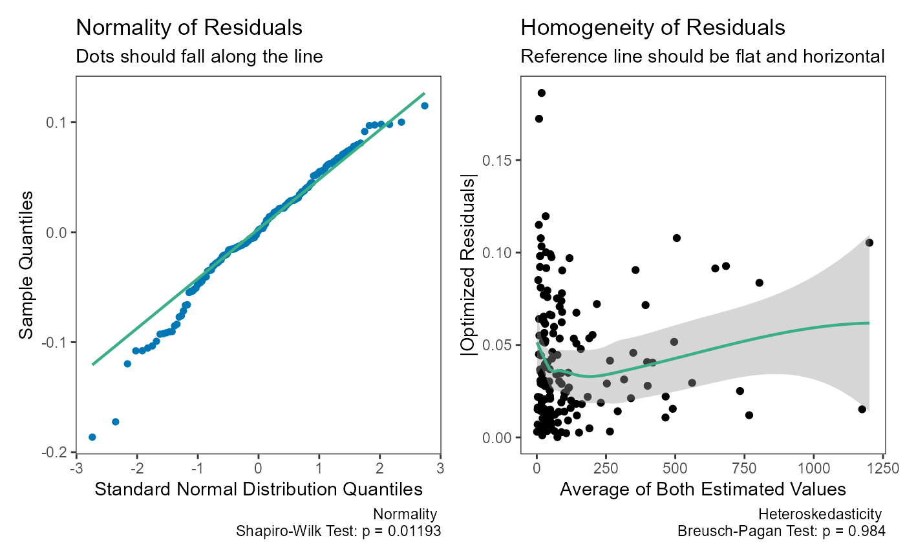
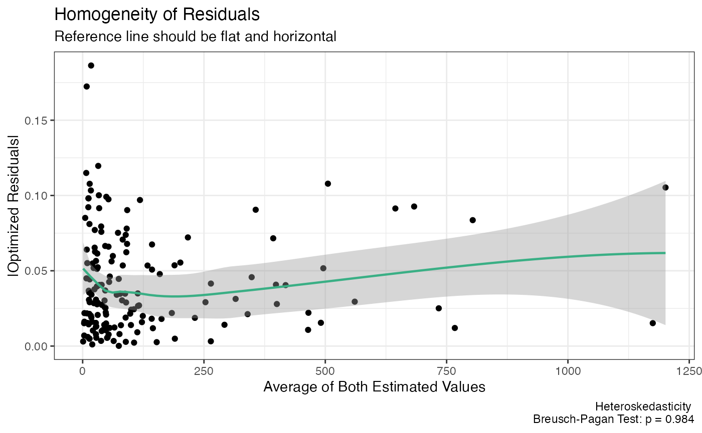

Deming Regression
Aaron R. Caldwell
Last Updated: 2025-12-20
Source:vignettes/Deming.Rmd
Deming.RmdBackground
Error-in-variables (EIV) models are useful tools to account for measurement error in the independent variable. For studies of agreement, this is particularly useful where there are paired measurements of the paired measurements (X & Y) of the same underlying value (e.g., two assays of the same analyte).
Deming regression is one of the simplest forms of of EIV models promoted by W. Edwards Deming1. The first to detail the method were Adcock (1878) followed by Kummell (1879) and Koopmans (1936). The name comes from the popularity of Deming’s book (Deming 1943), and within the field of clinical chemistry, the procedure was simply referred to as “Deming regression” (e.g., Linnet (1990)).
Joint Confidence Regions
A key enhancement to the dem_reg function is the
addition of joint confidence regions for the slope and
intercept parameters. Traditional confidence intervals treat each
parameter separately, but in regression analysis, these parameters are
correlated.
Joint confidence regions account for this correlation by creating an elliptical region in the (intercept, slope) parameter space. This approach, promoted by Sadler (2010), provides several advantages:
- Higher Statistical Power: The ellipse typically requires 20-50% fewer samples than traditional confidence intervals to detect the same bias
- Accounts for Parameter Correlation: When the measurement range is narrow, slope and intercept are highly negatively correlated
- More Appropriate Test: Testing against a point (e.g., slope=1, intercept=0) is naturally done with a region, not separate intervals
The power advantage is most pronounced when the ratio of maximum to minimum X values is small (< 10:1), which is common in clinical method comparisons.
Basic Deming Regression
Simple Deming Regression
We can start by creating some fake data to work with.
library(SimplyAgree)
dat = data.frame(
x = c(7, 8.3, 10.5, 9, 5.1, 8.2, 10.2, 10.3, 7.1, 5.9),
y = c(7.9, 8.2, 9.6, 9, 6.5, 7.3, 10.2, 10.6, 6.3, 5.2)
)Also, we will assume, based on historical data, that the measurement error ratio is equal to 2.
The data can be run through the dem_reg function and the
results printed.
dem1 = dem_reg(y ~ x,
data = dat,
error.ratio = 2,
weighted = FALSE)
dem1
#> Deming Regression with 95% C.I.
#>
#> Call:
#> dem_reg(formula = y ~ x, data = dat, weighted = FALSE, error.ratio = 2,
#> conf.level = 0.95)
#>
#> Coefficients:
#> (Intercept) x
#> 0.1285 0.9745The resulting regression line can then be plotted. The subtitle now indicates whether the identity line is enclosed by the joint confidence region.
plot(dem1, interval = "confidence")
Visualizing the Joint Confidence Region
A new plotting method plot_joint() allows visualization
of the confidence region in parameter space:
plot_joint(dem1,
ideal_slope = 1,
ideal_intercept = 0,
show_intervals = TRUE)
This plot shows: - The red ellipse: Joint confidence region - The blue rectangle: Traditional confidence intervals - The black dot: Estimated (intercept, slope) - The green/red X: Ideal point (whether enclosed or not)
Notice how the ellipse is smaller than the rectangle, especially in the directions that matter for detecting bias.
Model Diagnostics
The assumptions of the Deming regression model, primarily normality
and homogeneity of variance, can then be checked with the
check method for Deming regression results. Both plots
appear to be fine with regards to the assumptions.
check(dem1)
Weighted Deming Regression
For this example, I will rely upon the “ferritin” data from the
deming R package.
library(deming)
data('ferritin')
head(ferritin)
#> id period old.lot new.lot
#> 1 1 1 1 1
#> 2 2 1 3 3
#> 3 3 1 10 9
#> 4 4 1 13 11
#> 5 5 1 13 12
#> 6 6 1 15 13Let me demonstrate the problem with using simple Deming regression when the weights are helpful. When we look at the two plots below, we can see there is severe problem with using the “un-weighted” model.
dem2 = dem_reg(
old.lot ~ new.lot,
data = ferritin,
weighted = FALSE
)
summary(dem2)
#> Deming Regression with 95% C.I.
#>
#> Call:
#> dem_reg(formula = old.lot ~ new.lot, data = ferritin, weighted = FALSE,
#> conf.level = 0.95)
#>
#> Coefficients:
#> coef bias se df lower.ci upper.ci t p.value
#> Intercept 5.2157 -0.235818 2.18603 160 0.8985 9.533 2.386 0.01821
#> Slope 0.9637 0.002597 0.02505 160 0.9143 1.013 -1.448 0.14949
#>
#> 160 degrees of freedom
#> Error variance ratio (lambda): 1.0000
plot(dem2)
plot_joint(dem2)
check(dem2)
Now, let us see what happens when weighted is set to
TRUE.
dem3 = dem_reg(
x = "new.lot",
y = "old.lot",
data = ferritin,
weighted = TRUE
)
summary(dem3)
#> Deming Regression with 95% C.I.
#>
#> Call:
#> dem_reg(data = ferritin, x = "new.lot", y = "old.lot", weighted = TRUE,
#> conf.level = 0.95, formula = old.lot ~ new.lot)
#>
#> Coefficients:
#> coef bias se df lower.ci upper.ci t p.value
#> Intercept -0.02616 0.0065148 0.033219 160 -0.09176 0.03945 -0.7874 4.322e-01
#> Slope 1.03052 -0.0001929 0.006262 160 1.01815 1.04288 4.8729 2.626e-06
#>
#> 160 degrees of freedom
#> Error variance ratio (lambda): 1.0000
plot(dem3)
plot_joint(dem3)
check(dem3)
The weighted model provides a better fit.
Theoretical Details
Calculative Approach
Deming regression assumes paired measures (\(x_i, \space y_i\)) are each measured with error.
\[ x_i = X_i + \epsilon_i \]
\[ y_i = Y_i + \delta_i \]
We can then measure the relationship between the two variables with the following model.
\[ \hat Y_i = \beta_0 + \beta_1 \cdot \hat X_i \]
Traditionally there are 2 null hypotheses
First, the intercept is equal to zero
\[ H_0: \beta_0 = 0 \space vs. \space H_1: \beta_0 \ne 0 \]
Second, that the slope is equal to one.
\[ H_0: \beta_1 = 1 \space vs. \space H_1: \beta_0 \ne 1 \]
Joint Confidence Region
The joint \((1-\alpha) \times 100\%\) confidence region for \((\beta_0, \beta_1)\) is defined as:
\[ (\hat{\beta} - \beta_0)^T V^{-1} (\hat{\beta} - \beta_0) \leq \chi^2_{2,\alpha} \]
Where:
- \(\hat{\beta}\) = estimated parameters \((\hat{\beta}_0, \hat{\beta}_1)\)
- \(\beta_0\) = hypothesized parameters (e.g., \((0, 1)\) for identity)
- \(V\) = variance-covariance matrix
- \(\chi^2_{2,\alpha}\) = chi-square critical value with 2 degrees of freedom
This forms an ellipse in parameter space that accounts for the correlation between slope and intercept.
Measurement Error
A Deming regression model also assumes the measurement error (\(\sigma^2\)) ratio is constant.
\[ \lambda = \frac{\sigma^2_\epsilon}{\sigma^2_\delta} \]
In SimplyAgree, the error ratio can be set with the
error.ratio argument. It defaults to 1, but can be changed
by the user. If replicate measures are taken, then the user can use the
id argument to indicate which measures belong to which
subject/participant. The measurement error, and the error ratio, will
then be estimated from the data itself.
If the data was not measured in replicate then the error ratio (\(\lambda\)) can be estimated from the coefficient of variation (if that data is available) and the mean of x and y (\(\bar x, \space \bar y\)).
\[ \lambda = \frac{(CV_y \cdot \bar y)^2}{(CV_x \cdot \bar x)^2} \]
Weights
In some cases the variance of X and Y may increase proportional to
the true value of the measure. In these cases, it may be prudent to use
“weighted” Deming regression models. The weights used in
SimplyAgree are the same as those suggested by Linnet (1993).
\[ \hat w_i = \frac{1}{ [ \frac{x_i + \lambda \cdot y_i}{1 + \lambda}]^2} \]
Weights can also be provided through the weights
argument. If weighted Deming regression is not selected
(weighted = FALSE), the weights for each observation is
equal to 1.
The estimated mean of X and Y are then estimated as the following.
\[ \bar x_w = \frac{\Sigma^{N}_{i=1} \hat w_i \cdot x_i}{\Sigma^{N}_{i=1} \hat w_i} \]
\[ \bar y_w = \frac{\Sigma^{N}_{i=1} \hat w_i \cdot y_i}{\Sigma^{N}_{i=1} \hat w_i} \]
Estimating the Slope and Intercept
First, there are 3 components (\(v_x, \space v_y, \space cov_{xy}\))
\[ v_x = \Sigma_{i=1}^N \space \hat w_i \cdot (x_i- \bar x_w)^2 \] \[ v_y = \Sigma_{i=1}^N \space \hat w_i \cdot (y_i- \bar y_w)^2 \] \[ cov_{xy} = \Sigma_{i=1}^N \space \hat w_i \cdot (x_i- \bar x_w) \cdot (y_i- \bar y_w) \]
The slope (\(b_1\)) can then be estimated with the following equation.
\[ b_1 = \frac{(\lambda \cdot v_y - v_x) + \sqrt{(v_x-\lambda \cdot v_y)^2 + 4 \cdot \lambda \cdot cov_{xy}^2}}{2 \cdot \lambda \cdot cov_{xy}} \]
The intercept (\(b_0\)) can then be estimated with the following equation.
\[ b_0 = \bar y_w - b_1 \cdot \bar x_w \]
The standard errors of b1 and b0 are both estimated using a jackknife method (detailed by Linnet (1990)).